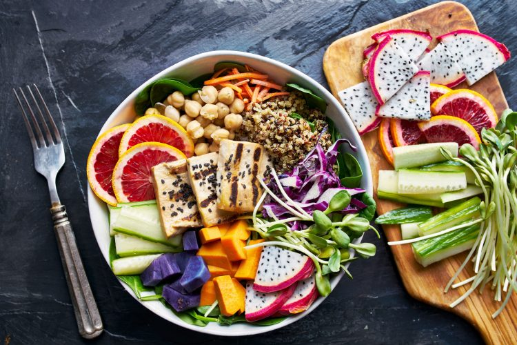
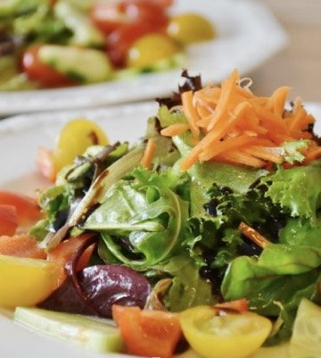

SOME HEALTHY FOOD
Dopamine helps to regulate the pleasure centre of the brain and can increase your motivation by sending
“feel-good” signals to your brain. Find vitamin B6 in foods such as salmon, tofu, turkey, bananas, avocado,
spinach, walnuts and hazelnuts.
DIET FOODS

Diet food refers to any food or beverage whose recipe is altered to reduce fat, carbohydrates, and/or sugar in order to make it part of a weight loss program or diet. Such foods are usually intended to assist in weight loss or a change in body type, although bodybuilding supplements are designed to increase weight.
GOOD FRUITS
Fruits Contain Lots of Fiber, Vitamins, Minerals and Antioxidants. Of course, fruits are more than just watery bags of fructose. There are lots of nutrients in them that are important for health. This includes fiber, vitamins and minerals, as well as a plethora of antioxidants and other plant compounds
VEGETABLE
Vegetables are well-known for being good for your health. Most vegetables are low in calories but high in vitamins, minerals and fiber. However, some vegetables stand out from the rest with additional proven health benefits, such as the ability to fight inflammation or reduce the risk of disease.